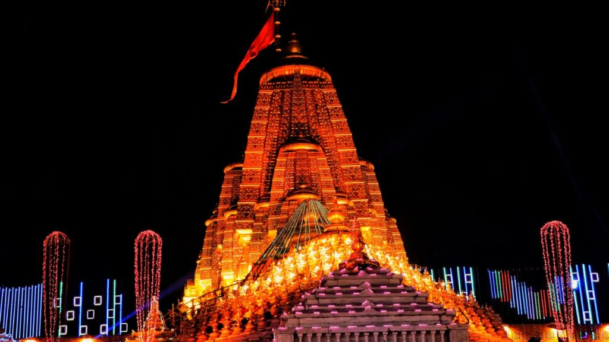

Ambaji, a famous pilgrimage place of Gujarat in India is situated on the border of States of Gujarat and Rajasthan near Abu Road, in the Danta Taluka of Banaskantha District, near the origin of the famous Vedic virgin river SARASWATI, on the hills of Arasur Parvat in Ambica forest , towards south-west side to old hills of Arvalli, at the altitude of about 480 meters, at about 1600 feet high from sea level, having at 8.33 sq km (5 sq. miles area ) area as a whole , is in fact one of the Fifty One (51) ancient Shakti Piths, the main Centre of Cosmic Power in India. It is one of the 51 Shakti Peethas. Ambaji mata temple is a major Shakti Peeth of India. It is situated at a distance of approximately 65 kilometres from Palanpur, 45 kilometres from Mount Abu, and 20 kilometres from Abu Road, and 185 kilometres from Ahmedabad, 50 kilometers from Kadiyadra near the Gujarat and Rajasthan border. In the holy temple of “Arasuri Ambaji”, there is no image or statue of goddess the holy “Shree Visa Yantra” is worshiped as the main deity. No one can see the Yantra with naked eye. The photography of the Yantra is prohibited. The original seat of Ambaji mata is on Gabbar hilltop in the town. A large number of devotees visit the temple every year specially on Purnima days. A large mela on Bhadarvi poornima (full moon day) is held. Every Year from all over the country people come here walking all over from their native place just to worship MAA AMBE in September. The whole Ambaji town is lit up as the nation celebrates the festive time of Diwali.
